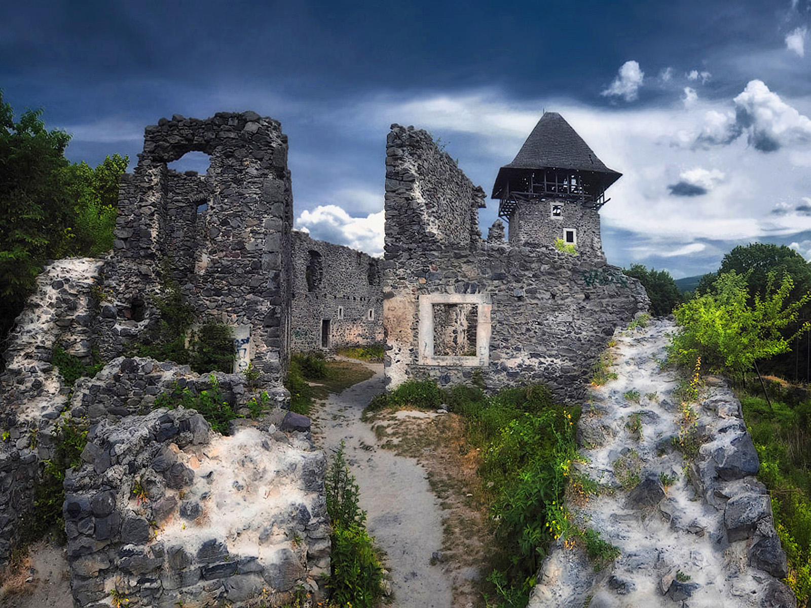
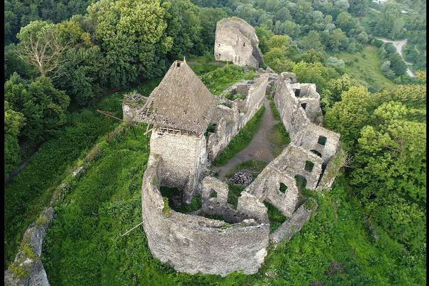

Довкола замку ще зберігся старий «Сад Вагнера», закладений тут аж 1879 року. (Ім’я парк отримав на честь угорського садовода Карла Вагнера). А сама фортеця стоїть на 125-метровій горі вулканічного походження.
Звідси відкривається неймовірний краєвид. Знизу видніється річка Уж. А пророслі поміж старовинних арок багряні листочки кущів створюють живописну картину особливого стилю. Поміж сірим камінням проростає зелений мох, окреслюючи яскравим струмком напіввидимі силуети кам’яних скульптур. Замок уперше згадується на початку XIV ст. як опорна база місцевого феодального бунту проти королівської влади Карла Роберта Анжу. У XIV ст. замок переходить до володінь роду графів Другетів, які будують на місці дерев'яного замку кам'яний. У 1644 році під час релігійних воєн трансільванський князь Юрій І Ракоці зруйнував замок.
Інформаційний плакат стверджує, що саме ця загадкова місцевість надихнула Жуля Верна на написання фантастичного роману жахів «Замок у Карпатах» (1889). Версія потребує перевірки, адже згідно того ж тексту плакату, письменник відвідав замок у 1892 році. Останнє малоймовірно, адже в 1886 році племінник письменника Гастон, який страждав на параною, стріляв письменнику в ногу, після чого той не міг рухатися до кінця свого життя.
Часом заснування замку називають ХІІІ, а то й ХІІ століття. Його будівництв було пов’язане з активною проруською політикою угорських правителів, зростанням ролі гірських шляхів, які вели через Карпати у бік Галича та Києва. Тоді замок був земляним городищем невеликих розмірів, оточеним валами і ровами. І, як більшість замків, мав кілька ліній оборони (а саме три).
Зараз замок справді є унікальною пам’яткою, яка не має аналогів ніде у світі. Від заснування минуло більше семи століть, а замок досі дивує відвідувачів своєю архітектурою, своєю історією та легендами. У XV столітті тут діяв високотехнологічний на той час водогін; всередині замку були унікальні елементи інтер’єру.